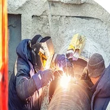
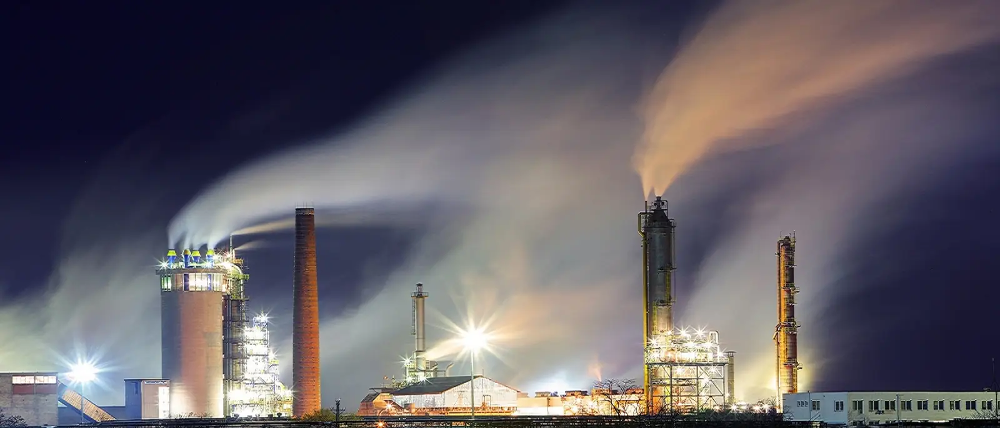

HOT-TAPING
Przyłącza i naprawy na czynnym rurociągu gazowym lub naftowym, bez wyłączania przesyłu. Technologia wg standardu API.

Technologia HOT-TAPING wg API pozwala wykonać przyłącze na czynnym rurociągu gazowym lub naftowym, bez przerywania przesyłu. W Polsce ma ją niewiele firm. Do tego nadzór spawalniczy, kontrola jakości i badania nieniszczące spoin.
Standardowe podłączenie odgałęzienia wymaga opróżnienia i wyłączenia rurociągu. Dla operatora oznacza to przestój liczony w dobach i utratę przesyłu.
Przy hot-tapingu króciec spawa się do rury pod ciśnieniem roboczym, montuje zawór, a dopiero potem wycina otwór wiertłem koronowym przez ten zawór. Medium płynie przez cały czas.

Przyłącza i naprawy na czynnym rurociągu gazowym lub naftowym, bez wyłączania przesyłu. Technologia wg standardu API.

Nadzór inżyniera IWE nad realizacją, od kwalifikowania technologii WPQR i WPS po odbiór.
Badania nieniszczące spoin, inspekcja IWI-C, dokumentacja odbiorowa dla UDT i inwestora.
Prace spawalnicze wykonywane przez kwalifikowanych spawaczy, na urządzeniach pod dozorem technicznym.
Skill-testy i egzaminy na uprawnienia UDT, TDT, TUV i ASME we własnej, atestowanej spawalni.
Doprowadzenie zakładu do uzyskania certyfikatu ISO 3834 lub 1090, razem z dokumentacją.